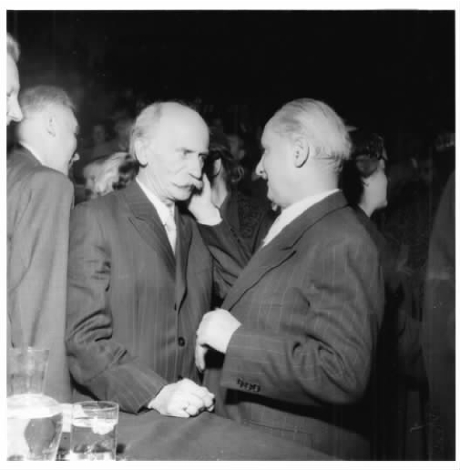

哲学家们有充分的理由将人置于研究的中心。追问“我能认识什么？”的认识论者想必会讨论认识者的状态。对于像胡塞尔这样的现象学家，在探究作为“先验”自我、主体或意识的一方与作为其客体的另一方之间的关系时，人显然是研究的中心。（海德格尔常批判这些哲学家对于主体的存在言之甚少。）但如果我们论及存在与存在者，人似乎并没有处于特权地位。他仅仅是诸多存在者中的一个。为什么我们要从一个具体实体开始，尤其是从此在开始呢？的确，亚里士多德认为，要研究存在，就得从研究存在的示例性类型，即物质开始；从那一类型的示例，即上帝开始。但是，海德格尔反对亚里士多德以此建立起来的本体论与神学之间的联系；他至少没有明确地提出，此在是一种示例性的或图式性的实体。他的确说过的是，是此在提出了“什么是存在？”这一问题。但我们在这里要插上一句：无论什么问题都是被此在问到的。我们是不是要假定，即使回答“长颈鹿有什么交配习惯？”这样的问题时也需要首先探究一下问这个问题的那个人的存在？从某种意义上说的确如此。因为要提问或为回答任何问题作准备，我们首先都要对问题的主题和寻找答案的方向有初步的理解，哪怕是很模糊的理解。在这种情形下，我们至少要知道“长颈鹿”这个词的意思可以在词典或百科全书中查到；如果这一问题能够引起我们的兴趣，我们想了解的肯定比这要多一些。然而，我们对长颈鹿的初步了解就它本身来说不是一个令人感兴趣的课题，在它给予我们初步的导向之后，与我们所问及的问题也没有很大的相关性。
同样地，此在对存在也有初步的了解。否则，我们就不能理解“什么是存在？”这一问题，也不会试着回答它。事实上，所有的人，即使是那些不会提出这一问题的人，都对存在或多或少有些了解，否则他们就无法与存在者打交道，甚至与他们自己也无法打交道。（海德格尔在他出版的著作中没有考虑到婴儿，但他毫无疑问会首先讲到，有能力通过与实体交流进行学习的婴儿必定已经对存在有着潜在的、一定程度上的理解；其次，他会说只有与我们所理解的完全成熟的此在进行对比，我们才能理解“阙失 ”成人期的婴儿。）这种理解并非像哲学家所热切期望的那样，是对存在的一种显性的概念性陈述，它也不需要是完美无瑕的理解。各种各样的错误它都有可能犯。但是，在对我们的初步认识有了了解之后，我们无法即刻就放弃这个理解，去探询真正的客体，指望通过直面存在纠正我们的初步了解中的错误——在分析长颈鹿时，我们却可以做到。因为，存在者的存在不像长颈鹿交配的习惯那样是容易被限定的、明确的或独立于我们之外的。存在无处不在：万物都存在着——人、锤子、城镇、理论、行星和星系。存在又不存在于任何地方：它并不是一种内在于任何实体的、易于辨识的的特性；即使能够被辨认，我们也需要从对它的初步认识那里不断获得引导，并且无论我们对其作怎样的调整，我们都不能为了与存在直接相遇而完全抛弃存在自身，或为了避免与存在相遇而检验存在。存在者的存在、其他实体的存在以及此在本身的存在都没有独立于此在：理论、问题、工具、城市——所有的这一切连同它们的存在及其存在方式都依赖于它们被提出、被询问、被使用、被栖居和被解释这一事实。此在本质上是存在于世界的，并不是简单地指它与世界上其他的物一样占据一块地方，而是说它不断地解释和参与其他实体及它们所处的背景，即“环境”或“我们周遭的世界”。从某种程度上讲，之所以存在着一个单一的世界而非一个实体的集合，仅仅就是因为此在如是而为。此在不是万物中的一员；它是世界的中心，把世界的脉络牵引了起来。因此，海德格尔在选取此在作为研究起点的时候，并没有只集中于一种实体之上而把其他实体排除在外；此在和它周围的整个世界同在。
“此在”被海德格尔用以同时指人以及人所具有的存在方式。它来自德语动词dasein，意思是“存在着”或“在那儿、在这儿”。作为名词的Dasein被其他哲学家如康德用来指实体的存在，但海德格尔用它专指人。他还强调这个名词的词根意义，即“在那儿”或“在这儿”。Da在日常德语中根据上下文的不同，有时会被译成“这里”，有时会被译成“那里”。［海德格尔有时建议，“这里”（hier）是作为说话者的我所处的位置，“那里”（dort）是他或她，即说话人所谈论的对象所处的位置，da是你，也就是我的说话对象所处的位置（xx.343）。但他一般会把此在看成是我而不是你。］Sein这个词的意思是“存在着”，作为名词是取抽象意义的“存在”。海德格尔有时（并非总是）会在存在这个词的中间加上连字符，变成“Da-sein”，来强调“存在于这（或那）里”之意。
为什么他用这种方式谈论人？人的存在与世界上其他实体的存在有显著的不同。“此在是为存在本身而存在的存在体。” [1] （《存在与时间》，191）跟其他实体不同，它没有确定的本质：
（《存在与时间》，42）
此在的存在之所以是个问题，部分是由于其存在“总是我的”，部分由于此在应该用人称代词“我”或“你”代称。那些仅仅是“现成在手”故而不适合被称做“我”或“你”的实体，其存在对实体来说是无关紧要的。既然它们无法像此在那样负载起自身的存在，若想成为万物中的一种，它们就得有一种确定的“什么”。但人的存在无论是什么样子都是其决定或已经决定了的：“此在总是作为它的可能性而存在。”（《存在与时间》，42）此在从两个方面违背了亚里士多德的本体论：首先，它不是有着本质属性和各种属性或“或然性”的某种物质。其次，此在的潜力或可能性先于其实在性：此在不是一个确定的实在之物，而是各种存在方式的可能性。
我们很自然地会想到哈姆雷特。此在是决定存在与否的实体。但哈姆雷特并不是说，人仅仅是能决定自身存在与否的某物。他为什么就不能再拥有一些像“桌子、房子或树”所具有的那种确定的属性呢？的确，除了这种决定存在与否的能力之外，他还必须有另外的特征。没有什么东西仅仅包含那种能力，正如它不可能仅仅把存在作为唯一的特征一样。人在任何情况下都不可能拥有决定是否存在的无限能力。他可以选择死亡，但不能选择出生，也不能选择在某一情形而非其他情形下出生。海德格尔说，人是被“抛到”这个世界上的。但此在一旦被抛，只要它对自身所是不满，那么除了选择自杀之外，它还有对自身存在的其他控制能力。（海德格尔在《存在与时间》中并没有提及自杀，但从xx.439中很明显可以看出，他视自杀为对死亡可能性的不合适或“非本真”的反应。）因此，我能决定的不是存在与否，而是怎样存在。我们在此对诸如“它如何存在？”和“存在的方式、风格和方法”这样的表述有不同的用法。到目前为止，我们假定实体有且仅有一种存在方式，但现在我们发现此在的存在方式涉及在多种存在方式中选择一种的能力。我可以选择成为牧师、医生或哲学家。对“我是什么？”恰当的回答不是以对自己不偏不倚的评价形式出现，而是以关于我打算怎样存在的决定出现的，哪怕这个答案仅仅是对已作出的决定的确认。为表明这一特质，海德格尔指出此在独立于所有实体之外地存在或拥有存在 。动词existieren（存在着）和名词Existenz（存在）同它们英语的对应词一样，源于拉丁文，字面意思为“突显出来”和“突显”。此在突显出来，生成自己的存在方式，并采取不同于其他任何实体的方式。此在的这一特征很关键，因此海德格尔决定让我们弃用在前面考察其他实体的存在时使用的“诸范畴”，而使用“生存论性质”（Existenzialien）来说明此在之存在的基本特征（《存在与时间》，44）。

图41953年，海德格尔与曼弗雷德·施勒特尔在慕尼黑学院会议上
说此在不涉及“什么”以及“属性”，它所包含的完全是“可能性”，这难道不是一种夸张的说法？或许是我毕竟太笨的原因，难以成为牧师、医生或哲学家。我可能秃顶，不仅不是出自我自己的选择，而且没有重新长出头发的可能性。大多数人在身体、生物结构方面与其他生物迥异，他们改变这种情况的可能性非常有限。有的哲学家指出，人的区别性特征在于其理性，他们将人定义为理性的动物。海德格尔并没有想当然地认为此在可以成为任何它想要的样子。我的所作所为会受到环境的制约：“生存性总是受现实性的制约。”（《存在与时间》，192）但我身边的环境和状况不仅仅是“现成在手的属性”：我总可以以不同的方式对它们作出反应。如果我秃顶了，我可能拒绝接受秃顶的事实，继续坚持说我满头头发；我也可能沉溺于秃顶的事实中不可自拔，直至被它逼得近乎绝望；我可能戴假发；可能完全不在乎；或者可能高兴地接受秃顶的事实，洋洋自得，或许还会借助秃顶成功地成为情人或演员。我选择哪一种方式，并不完全取决于秃顶这一事实，而是由我自由选择的。
但这真的是我自由选择的吗？秃顶这一特征对个人影响很大，也不是件令人愉悦的事情，会引发特定的反应，这一事实取决于并非由我制定的社会习俗，对其所产生的诸种恰当反应也取决于此。戴假发是一个可接受的反应，但企图剃光每一个人的头发，从而使自己不再是一个例外则是一种不能接受的反应。我想，“一个人不能做这种事”，这样我就排除了这个选项，以至于我都不会考虑这样做的可能性。就我因为“常人”、“某人”或“我们”不会做这样的事而拒绝或没有考虑某些选项来说，我的状况就是一种“非本真性”而不是“本真性”。我让“别人”，甚至是无名的“常人”来替我作决定。
海德格尔用来表示“本真”的词是eigentlich，在德语中的意思是“真的”或“合适的”，从这个词他创制了Eigentlichkeit这个词，即“本真性”。“非本真的”即为uneigentlich——通常意义为“非字面义的，比喻的”。“非本真性”对应的是Uneigentlichkeit。此在有时是本真的，有时不是。海德格尔是否认为只有本真的此在才是真正的此在，才是真正意义上的人的存在，非本真的此在就不是在真正意义上属人的呢？并非如此。他将eigentlich与形容词eigen即“自己的”联系起来，这一形容词用在诸如“有自己的房间”、“有自己的主见”以及“做自己的主人”等语境中。具有本真性就是忠实于自己 ，成为自己 ，做自己 的事。
那什么是非本真性呢？如果不是我自己的思想，不是我自己的身体，那会是谁的呢？“自己的”常相对于“其他（另一）人的”，eigen相对于fremd，即“陌生的，其他的”。我可能会模仿他人或其他一组人——如海德格尔、我的配偶，或我学术上的同事——他们怎么做我就怎么做，他们怎么想我就怎么想。但海德格尔认为，在更多情况下我服膺于“常人 ”的所做和所想。他在这里使用了一个简单的德语人称代词man，即“某人”，如“某人还自己的债”，尽管在德语用man的地方，英语更常用“我们”、“他们”、“你们”或“人们”。海德格尔把这一人称代词变为有定名词即das Man，指那个“人”或“常人”。“常人”就是他人，但只要我所做、所想和所感跟他们一样，这个“常人”也包括我自己在内。它不定指他人，它是每一个人又不是每一个人。我用英语写作，因为这是人们 做的事情。我在丧礼上哀伤，是因为人 们 都会这样做。只要我服膺于“常人”，我就不再是作为个体的自己了，而是“常人自己 ”：“日常此在的自我是常人自己，区别于本真性的自我 。”（《存在与时间》，129）只要此在做事仅仅是因为人们 也这样做，那么此在就是非本真性的。只要此在自己拿主意，不脱离自己的身体，或是保持真我，那么它就是本真性的。本真性当然不一定指的是怪僻。怪僻可以是非本真性的，而服从标准性的惯例也可以是一种本真性的选择。
非本真性绝不是一个绝对意义上的缺陷，它是我们大多数人在大多数时候所处的一种正常状态。况且，若没有它，我们根本就无法作任何决定。如果我没有掌握英语，我就不可能决定写书。鉴于我的对象读者懂英语，我根本不会考虑用古希腊语而非英语来写，不会考虑是从右到左写还是从左到右写，也不会考虑把单词“坏”的意思当做“好”来用。另一方面，用英语写作并不要求我去重复别人用过的句子和短语，重复“陈词滥调”以及固有的表达法；如果我这样做，而不是努力去表达我自己的观点或寻找合适的（即使到目前为止还未被用过的）表达法去代替它们，那么我的本真性就未得其所。然而，不管我的非本真性是否恰当，都会出现一个问题：鉴于我的非本真性，能说我自己的存在是由我决定的吗？海德格尔的答案是，如果我是非本真的，如果我将自己的决定让给“常人”去作，我已经潜在性地在决定这样做了。至少我总是有可能收回自己的选择；这样做不一定很容易，但至少是可能的。如果我能自己决定摆脱非本真性，那么如果没有做到，也还是取决于作出了不去摆脱的决定，尽管这个决定是潜在性的。于是，此在的非本真性并不意味着此在不“存在”，即超越了它自己的存在。
那身体呢？难道它不是一个人人都拥有的、确定而又无法逃避的“什么”吗？我的身体当然不仅仅是一个“什么”：我可以决定用它做很多事，也可以对它做很多事。只要人活着，他们都会拥有身体，都会有既不能被移走、也不能被完全改变的人体的中心生物核。从海德格尔对此在的论述中可以很清楚地看出此在是附身的，它既不是一个毫无附着的自我，也不是完全意义上的心理主体。但他很少提及身体。假设我打算描述人体，我怎么进行描述呢？我用以描述它的语言可能不会在本质上暗示它是一个可以走路、谈话、用锤子击打等等一副活人的身体，而是用将其类同为一具尸体或其他动物身体的语言。但海德格尔反对说，如果我们这样看身体，我们就得加入一些东西使得它成为完整的、区别于尸体和其他动物的人——例如灵魂，或理性——这样我们就失去了人的完整性，或我们至少还得解释这一完整性是怎么来的。并且，如此思考人体也是一个复杂而不自然的过程。我们并不会将自己和他人看做首先是类似于石块和岩石的扩展的身体，然后是活的生物体，再然后是动物体，最后是人。至少在成年的时候，我们开始将自己看成完整的人，需要一些抽象思维才能将我们视做动物或身体。由此，哲学家也应该首先考虑此在而不是其身体，也就是考虑不仅会问“什么是存在？”也会问“我的身体是什么？”的完整意义上的人。然而，当我们转而思考此在的时候，我们会发现，只要我们的身体无恙，我们通常都不会注意或关心它们。G.E.摩尔曾举起他的双手宣称“我知道我有两只手”。但一般我们都不会对我们的手作这样的宣称，或根本不会将注意力投向它们。我们会关注手上的工作以及手中的笔而不是握笔的手，甚至更会把注意力放在正在用来书写的纸，或者还有可能是我们所写的东西上面。身体是不起眼的。它就在那里，但它在此在所作所为的背景而不是前景中。它既不是外加给此在的，也不是此在外加的对象。如海德格尔描述的那样，此在本质上需要某一类型的身体，而不是一种灵魂或自我，可以想见地存在于无身体附着的状态中，抑或是存在于一个与典型的人体迥异的肉体中。此在，其本质和能力——就像一个软件——密切地与其硬件，即身体交织在一起。然而，对海德格尔来说，软件是第一位的，硬件居其次。
海德格尔有充分的理由将人作为此在、追问者、选择者和自我生产者来展开思考；不管怎样，这也就是我们的出发点，无论我们是生物学家、历史学家还是工匠。但我们也许会表示异议，因为此在只是人诸多方面中的一面，不仅仅是生物学方面，还有其他诸如心理学或是德国哲学家通常称之为“精神”（Geist）或“精神性的”方面——各种科学、理论、艺术作品，甚至我们所创造的社会和政治结构。海德格尔是否忽略了所有这些？他并没有忽略。它们被悉数囊括在内，只是是以此在的存在方式被包括进去的。海德格尔不承认有任何纯粹内在的心理域存在，也不承认存在逻辑性实体和数学性实体的理念域。他谈论的此在的“存在”涉及一种坚定的实在主义，这种实在主义即使没有摈弃诸如逻辑、心理学和认识论，也降低了它们的地位。即使是处于最深层情态或情感中的此在，也总是与世界和其中的实体打交道。科学理论，甚至是逻辑和数学中的公理，都是此在的存在方式，亦即其在世的存在方式。